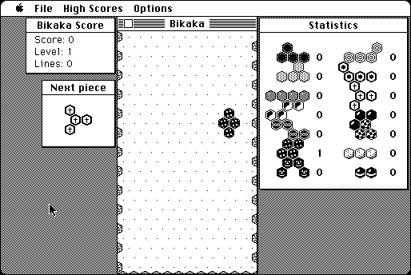

Download
Bikaka-141.zip (131K) Bikaka 1.4.1 repackaged into a zipped hfs disk image and checksum file. The disk image can be mounted with Mini vMac.
Bikaka-141.hqx (184K) Bikaka 1.4.1 in the original format.
copyright: Ingemar Ragnemalm
mod date: Apr 2, 1996
license: freeware
official url :
Miscellaneous Games by Ingemar Ragnemalm
"Tetris on the hexagonal grid." Sound doesn’t work.

If you find these downloads useful, please consider helping the Gryphel Project, which hosts them.
Here are the md5 checksums for the downloads, signed with Gryphel Key 5:
--------- GRY SIGNED TEXT --------- b644840195ae62f9d1438a84eddadebc Bikaka-141.zip 8732ed8c5030619e5f1c936244458b09 Bikaka-141.hqx ------- BEGIN GRY SIGNATURE ------- Gry/4Xa8CFcUzxdN/OEETVSLqp8aQaGxvfNaeQ0BfJqib9JVmwtYIOGEJ2lSWpp3 8iPwbzMV3lDoTcBEO3kp4WZaqHnU3SSPKqUKeJFf5VjbSs00TD5UQpBmh+wPdhli wzL8GjfQZwqRQGlltrRFks5uZ3pjzBciHTi4dSxSCai62rNFveLG+1KBK18T/FSu -------- END GRY SIGNATURE --------